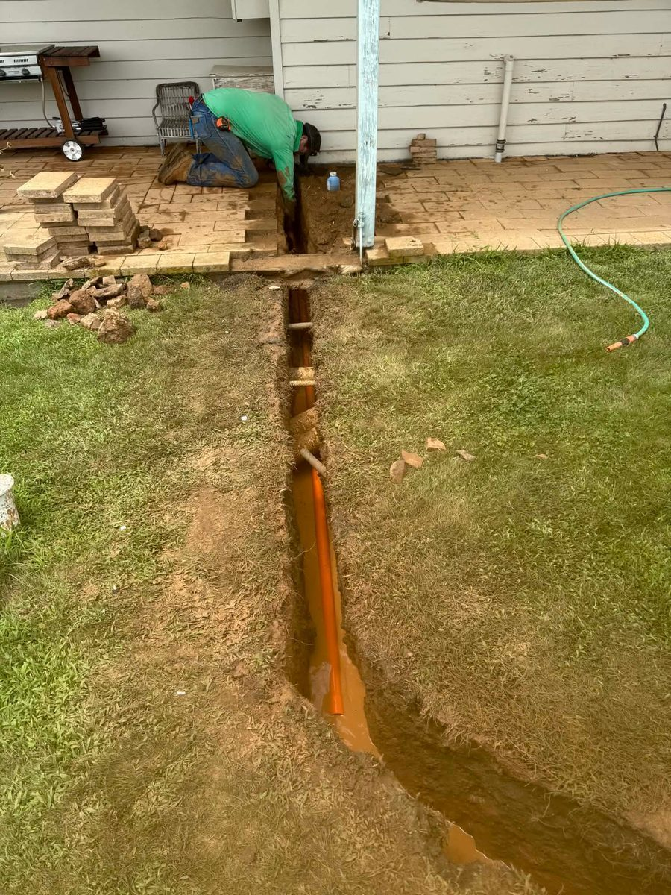

From the Job
Potholing in Compacted Canberra Ground: Exposing Services Without the Guesswork
How we expose water meters, valves and service connections in Canberra's hard, compacted soils — without putting a tool through the service.
May 2026 · 5 min read